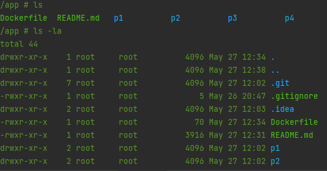
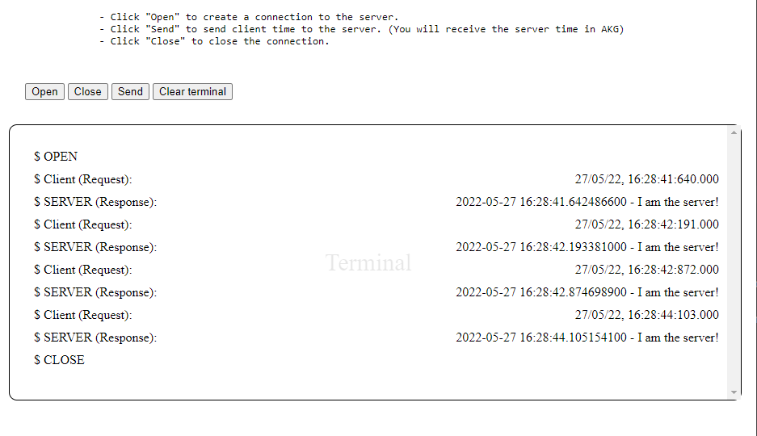
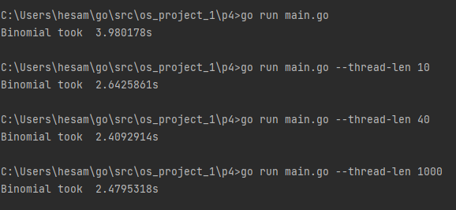

This folder contains the solutions for project 1, OS course at Amirkabir university of technology.
The documentation contains some instructions needed to run the applications and also funder explanation about the results.
Note that:
All solutions are implemented using golang. You can use This link to download and install this language on your machine to be able to run these codes.
P1 is using Windows API system call. So you need to run that on a Windows machine.
For your ease, I provided a dockerfile. If you have docker installed, by running these steps you can run all applications on your system without installing golang:
Using this method, you will not be able to run p1. (Because we used a Linux golang image, and we couldn't use a Windows golang image because normally docker is only able to run linux based images.)
In the root directory run these commands:
docker build -t os_project_1 .
docker run -it --rm --name ps_project_1_instance os_project_1
Now you are interacting with a terminal running on a virtual machine. (You can continue running all other steps in here)

To connect more terminals to this virtual machine run:
docker exec -it ps_project_1_instance sh
Group members:
- Hesam Sarkhosh - 9713020
- Shiva Moloodi - 9713031
- Amirmohammad Saremi - 9713051
This project contains the solution to 4 problems:
This program runs a new process using Windows API syscall.
Follow these steps:
cd ./p1
go run ./main.go
# This app runs the windows **calculator** on default.
# So if you want to run other executables just pass it using --path flag.
# Example:
go run main.go --path "C:\Windows\System32\wsl.exe"
syscall built-in golang library which uses an API to execute system calls.// p1/main.go
func main() {
// ...
err = syscall.CreateProcess(
nil,
argv,
nil,
nil,
true,
0,
nil,
nil,
&sI,
&pI)
//...
}
ThreadID and ProcessID to the console.

This program solves a Producer-consumer problem using shared memory.
cd ./p2
go run ./main.go
# Flags:
# Use --cpuprofile to specify a file name to write cpu profile
# Use --memprofile to specify a file name to write memory profile
# Use -n to specify number of messages being transferred. Default is 5.
# As default they are not being written to file
go run main.go -n 20 --cpuprofile cpu.prof --memprofile mem.prof
//p2/main.go
//...
type Consumer struct {
msgs *chan int
}
// NewConsumer creates a Consumer
func NewConsumer(msgs *chan int) *Consumer {
return &Consumer{msgs: msgs}
}
// consume reads the msgs channel
func (c *Consumer) consume() {
fmt.Println("consume: Started")
for {
msg := <-*c.msgs
fmt.Println("consume: Received:", msg)
}
}
//...
//p2/main.go
//...
// Producer definition
type Producer struct {
msgs *chan int
done *chan bool
}
// NewProducer creates a Producer
func NewProducer(msgs *chan int, done *chan bool) *Producer {
return &Producer{msgs: msgs, done: done}
}
// produce creates and sends the message through msgs channel
func (p *Producer) produce(max int) {
fmt.Println("produce: Started")
for i := 0; i < max; i++ {
fmt.Println("produce: Sending ", i)
*p.msgs <- i
}
*p.done <- true // signal when done
fmt.Println("produce: Done")
}
//...
//p2/main.go
//...
cpuprofile := flag.String("cpuprofile", "", "write cpu profile to `file`")
memprofile := flag.String("memprofile", "", "write memory profile to `file`")
// get the maximum number of messages from flags
max := flag.Int("n", 5, "defines the number of messages")
flag.Parse()
//...
//p2/main.go
//...
// utilize the max num of cores available
runtime.GOMAXPROCS(runtime.NumCPU())
//...
//p2/main.go
//...
// Start a goroutine for Produce.produce
go NewProducer(&msgs, &done).produce(*max)
// Start a goroutine for Consumer.consume
go NewConsumer(&msgs).consume()
// Finish the program when the production is done
<-done
//...
//p2/main.go
//...
// CPU Profile
if *cpuprofile != "" {
f, err := os.Create(*cpuprofile)
if err != nil {
log.Fatal("could not create CPU profile: ", err)
}
if err := pprof.StartCPUProfile(f); err != nil {
log.Fatal("could not start CPU profile: ", err)
}
defer pprof.StopCPUProfile()
}
//...
// Memory Profile
if *memprofile != "" {
f, err := os.Create(*memprofile)
if err != nil {
log.Fatal("could not create memory profile: ", err)
}
runtime.GC() // get up-to-date statistics
if err := pprof.WriteHeapProfile(f); err != nil {
log.Fatal("could not write memory profile: ", err)
}
f.Close()
}
//...

This implementation shows the time exchange process between 1 server and 2 clients using websockets.
The golang server.
The front-end Javascript client that you can access on http://127.0.0.1:8080.
The golang client.
To run the server and the front-end JS client:
cd ./p3/server
go get github.com/gorilla/websocket
go run ./main.go
# if you want to run it on other ports you can use --addr flag:
# go run ./main.go --addr localhost:8070
After running the server, start the client:
cd ./p3/client
go get github.com/gorilla/websocket
go run ./main.go
#Note that you can't start golang client before running the server. Also, after halting the server the golang client halts automatically.
The server sends its current time to the clients.
The golang client sends its current time every second and prints all messages received.
The JS client sends its current time when you push "send" button and server in response returns his own time.
The server and golang client use gorilla/websocket to create websocket connections.
// p3/server/main.go
//...
var upgrader = websocket.Upgrader{} // use default options
func echo(w http.ResponseWriter, r *http.Request) {
c, err := upgrader.Upgrade(w, r, nil)
//...
}
//...
net/http package to establish http connection.// p3/server/main.go
//...
func main() {
//...
http.HandleFunc("/echo", echo)
http.HandleFunc("/", home)
log.Fatal(http.ListenAndServe(*addr, nil))
}
//...
html/template to render index.html front-end Js client on
http://127.0.0.1:8080.// p3/server/main.go
//...
var homeTemplate = template.Must(template.New("").Parse((func () string {
result, err := ioutil.ReadFile("index.html")
if err != nil {
log.Fatal(err)
return ""
}
return string(result)
})()))



This program implements the functionality of adding two randomly generated N * N matrices, using concurrency.
You should note that unlike any other programming language, Golang supports built-in functionality for multithreading and concurrency.
This means that we can't access any API to execute system calls based on the OS, but golang gives us a much better functionality!
Golang uses concepts like Go routine and channel which basically is equivalent to coroutine and Pipeline.
// p4/main.go
//...
func main(){
//...
var a [length][length]int
var b [length][length]int
for i := 0; i < length; i++ {
for j := 0; j < length; j++ {
a[i][j] = rand.Intn(10)
b[i][j] = rand.Intn(10)
}
}
//...
}
length constant inside the code (That's a compile-time constant,
so we couldn't use flags to specify that dynamically).
const length = <any value you want> //default is 1000
// p4/main.go
//...
func main() {
// ...
//
pairs := make(chan pair, 10)
var wg sync.WaitGroup
//...
// Used to sync the final results
wg.Add(getThreadLength())
// Run producers to calculate sum of each pair
for i := 0; i < getThreadLength(); i++ {
go Calc(pairs, &a, &b, &rez, &wg)
}
// To track the time, timer starts:
start = time.Now()
// Running the one and only receiver or consumer
for i := 0; i < length; i++ {
for j := 0; j < length; j++ {
pairs <- pair{row: i, col: j}
}
}
close(pairs)
// Used to sync the final results
wg.Wait()
// To track the time, timer ends:
elapsed := time.Since(start)
// Printing the Timer result:
fmt.Println("Binomial took ", elapsed)
}
As default the program uses 1 goroutine as calculator or producer, Which means it runs in single thread mode.
To run the program using all threads the number of go routines must be more than kernel threads. You can
use --thread-len flag to specify the number of goroutines
being used. (see more in How to run section.)
This command guarantees that the max-number of kernel threads being used is set to the maximum number available, to prevent OS from limiting the resources:
runtime.GOMAXPROCS(runtime.NumCPU())
Follow these steps:
cd ./p4
# Run in single thread mode:
go run ./main.go
# To set the number of goroutines (producers) use --thread-len. Default is 1 (Single thread).
go run ./main.go --thread-len 10
After running the program, you can see the time it took to compute the final matrix.

- As you can see, increasing the number of goroutines does not always provide better results. For example when we used 1000 goroutines, the overhead of handling the concurrency was more expensive than the improvement we got.